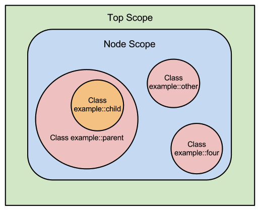

Puppet Language: Scope 2.7.21
Scope Basics
A scope is a specific area of code, which is partially isolated from other areas of code. Scopes limit the reach of:
Scopes do not limit the reach of:
- Resource titles, which are all global
- Resource references, which can refer to a resource declared in any scope
Summary Diagram

Any given scope has access to its own contents, and also receives additional contents from its parent scope, from node scope, and from top scope.
In the diagram above:
- Top scope can only access variables and defaults from its own scope.
- Node scope can access variables and defaults from its own scope and top scope.
- Each of the
example::parent, example::other, andexample::fourclasses can access variables and defaults from their own scope, node scope, and top scope. - The
example::childclass can access variables and defaults from its own scope,example::parent's scope, node scope, and top scope.
Top Scope
Code that is outside any class definition, type definition, or node definition exists at top scope. Variables and defaults declared at top scope are available everywhere.
# site.pp
$variable = "Hi!"
class example {
notify {"Message from elsewhere: $variable":}
}
include example
$ puppet apply site.pp
notice: Message from elsewhere: Hi!
Node Scope
Code inside a node definition exists at node scope. Note that since only one node definition can match a given node, only one node scope can exist at a time.
Variables and defaults declared at node scope are available everywhere except top scope.
Note: Classes and resources declared at top scope bypass node scope entirely, and so cannot access variables or defaults from node scope.
# site.pp
$top_variable = "Available!"
node 'puppet.example.com' {
$variable = "Hi!"
notify {"Message from here: $variable":}
notify {"Top scope: $top_variable":}
}
notify {"Message from top scope: $variable":}
$ puppet apply site.pp
notice: Message from here: Hi!
notice: Top scope: Available!
notice: Message from top scope:
In this example, node scope can access top scope variables, but not vice-versa.
Local Scopes
Code inside a class definition or defined type exists in a local scope.
Variables and defaults declared in a local scope are only available in that scope and its children. There are two different sets of rules for when scopes are considered related; see "scope lookup rules" below.
# /etc/puppet/modules/scope_example/manifests/init.pp
class scope_example {
$variable = "Hi!"
notify {"Message from here: $variable":}
notify {"Node scope: $node_variable Top scope: $top_variable":}
}
# /etc/puppet/manifests/site.pp
$top_variable = "Available!"
node 'puppet.example.com' {
$node_variable = "Available!"
include scope_example
notify {"Message from node scope: $variable":}
}
notify {"Message from top scope: $variable":}
$ puppet apply site.pp
notice: Message from here: Hi!
notice: Node scope: Available! Top scope: Available!
notice: Message from node scope:
notice: Message from top scope:
In this example, a local scope can see "out" into node and top scope, but outer scopes cannot see "in."
Overriding Received Values
Variables and defaults declared at node scope can override those received from top scope. Those declared at local scope can override those received from node and top scope, as well as any parent scopes. That is: if multiple variables with the same name are available, Puppet will use the "most local" one.
# /etc/puppet/modules/scope_example/manifests/init.pp
class scope_example {
$variable = "Hi, I'm local!"
notify {"Message from here: $variable":}
}
# /etc/puppet/manifests/site.pp
$variable = "Hi, I'm top!"
node 'puppet.example.com' {
$variable = "Hi, I'm node!"
include scope_example
}
$ puppet apply site.pp
notice: Message from here: Hi, I'm local!
Resource defaults are processed by attribute rather than as a block. Thus, defaults that declare different attributes will be merged, and only the attributes that conflict will be overridden.
# /etc/puppet/modules/scope_example/manifests/init.pp
class scope_example {
File { ensure => directory, }
file {'/tmp/example':}
}
# /etc/puppet/manifests/site.pp
File {
ensure => file,
owner => 'puppet',
}
include scope_example
{% endhighlight %}
In this example, /tmp/example would be a directory owned by the puppet user, and would combine the defaults from top and local scope.
More Details
Scope of External Node Classifier Data
- Variables provided by an ENC are set at top scope.
- However, all of the classes assigned by an ENC are declared at node scope.
This gives approximately the best and most-expected behavior --- variables from an ENC are available everywhere, and classes may use node-specific variables.
Note: this means compilation will fail if an ENC tries to set a variable that is already set at top scope by the site manifest.
Named Scopes and Anonymous Scopes
A class definition creates a named scope, whose name is the same as the class's name. Top scope is also a named scope; its name is the empty string (aka, the null string).
Node scope and the local scopes created by defined resources are anonymous and cannot be directly referenced.
Accessing Out-of-Scope Variables
Variables declared in named scopes can be referenced directly from anywhere (including scopes that otherwise would not have access to them) by using their global qualified name.
Qualified variable names are formatted as follows, using the double-colon namespace separator between segments:
$<NAME OF SCOPE>::<NAME OF VARIABLE>
include apache::params
$local_copy = $apache::params::confdir
This example would set the variable $local_copy to the value of the $confdir variable from the apache::params class.
Notes:
- Remember that top scope's name is the empty string (a.k.a, the null string). Thus,
$::my_variablewould always refer to the top-scope value of$my_variable, even if$my_variablehas a different value in local scope.Note that a class must be declared in order to access its variables; simply having the class available in your modules is insufficient.
This means the availability of out-of-scope variables is parse order dependent. You should only access out-of-scope variables if the class accessing them can guarantee that the other class is already declared, usually by explicitly declaring it with
includebefore trying to read its variables.
Variables declared in anonymous scopes can only be accessed normally and do not have global qualified names.
Scope Lookup Rules
The scope lookup rules determine when a local scope becomes the parent of another local scope.
There are two different sets of scope lookup rules: static scope and dynamic scope. Puppet 2.7 uses dynamic scope, but future versions of Puppet will use static scope. To help users prepare, Puppet 2.7 will print warnings to its log file whenever a variable's value would be different under static scope.
More details about the elimination of dynamic scope can be found here.
Static Scope
In static scope, parent scopes are only assigned by class inheritance (using the inherits keyword). Any derived class receives the contents of its base class in addition to the contents of node and top scope.
All other local scopes have no parents --- they only receive their own contents, and the contents of node scope (if applicable) and top scope.
Static scope has the following characteristics:
- Scope contents are predictable and do not depend on parse order.
- Scope contents can be determined simply by looking at the relevant class definition(s); the place where a class or type is declared has no effect. (The only exception is node definitions --- if a class is declared outside a node, it does not receive the contents of node scope.)
All future versions of Puppet will use static scope for looking up variables. Puppet 2.7 does not enforce static scope, but will log warnings when a variable lookup would violate it.
Dynamic Scope
In dynamic scope, parent scopes are assigned by both inheritance and declaration, with preference being given to inheritance. The full list of rules is:
- Each scope has only one parent, but may have an unlimited chain of grandparents, and receives the merged contents of all of them (with nearer ancestors overriding more distant ones).
- The parent of a derived class is its base class.
- The parent of any other class or defined resource is the first scope in which it was declared.
- When you declare a derived class whose base class hasn't already been declared, the base class is immediately declared in the current scope, and its parent assigned accordingly. This effectively "inserts" the base class between the derived class and the current scope. (If the base class has already been declared elsewhere, its existing parent scope is not changed.)
Dynamic scope has the following characteristics:
- A scope's parent cannot be identified by looking at the definition of a class --- you must examine every place where the class or resource may have been declared.
- In some cases, you can only determine a scope's contents by executing the code.
- Since classes may be declared multiple times with the
includefunction, the contents of a given scope are parse-order dependent, and may vary between different runs of identical code. This is less of a danger in Puppet 2.7 than in previous versions, as relative resource ordering is now deterministic, but can still cause problems when running on similar-but-not-identical nodes.
If used simply, dynamic scope will usually yield simple results; in fact, it can emulate static scope. However, combining classes that declare classes, class inheritance, and insufficiently unique variable names can result in erratic behavior. Adding node inheritance to that mix can make the confusion an order of magnitude worse. See "Scope and Puppet" for historical context and for better solutions to deal with per-node data.
Messy Under-the-Hood Details
- Node scope only exists if there is at least one node definition in the site manifest (or one has been imported into it). If no node definitions exist, then ENC classes get declared at top scope.
- Although top scope and node scope are described above as being special scopes, they are actually implemented as part of the chain of parent scopes, with node scope being a child of top scope and the parent of any classes declared inside the node definition. However, since the move to static scoping causes them to behave as little islands of dynamic scoping in a statically scoped world, it's simpler to think of them as special cases.
- If you ignore best practices and use node inheritance, the rules of parent scope assignment treat node definitions like classes; that is, the base node becomes the parent scope of the derived node, and normal dynamic scoping will apply to the classes declared in each of the two definitions. Note that this will usually yield the opposite result of whatever you are trying to achieve.